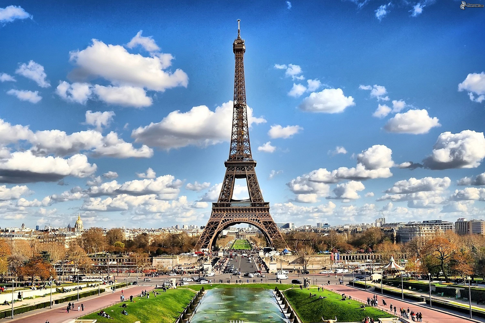
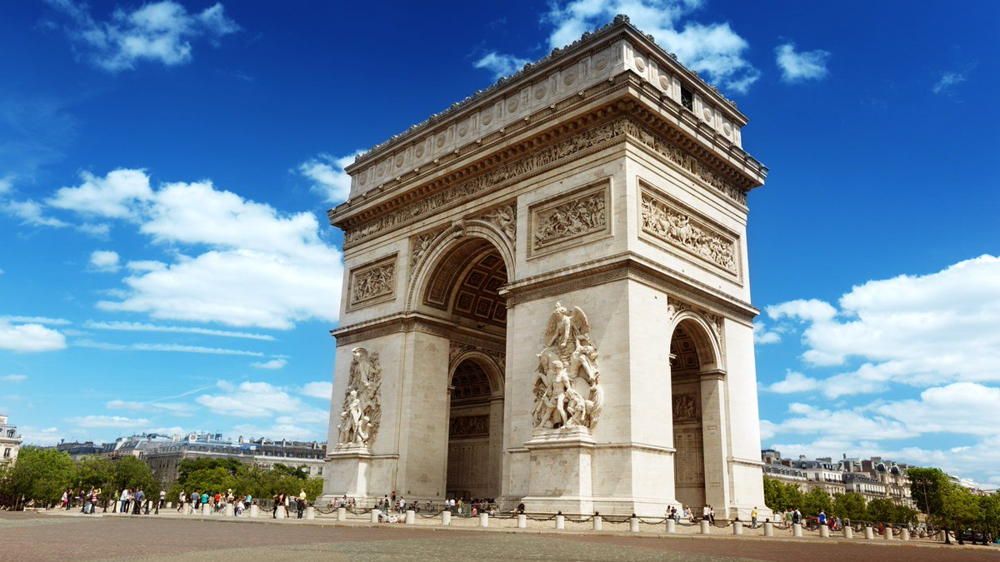
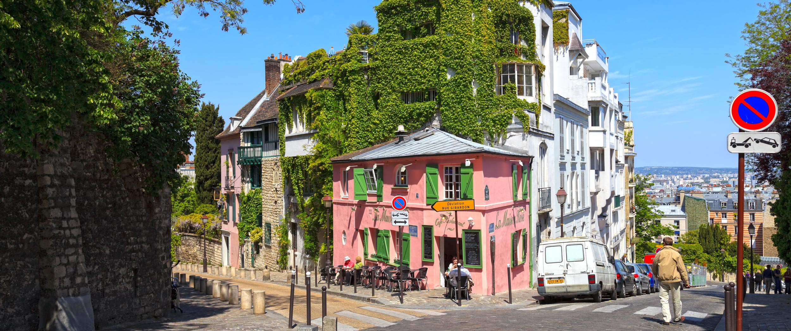
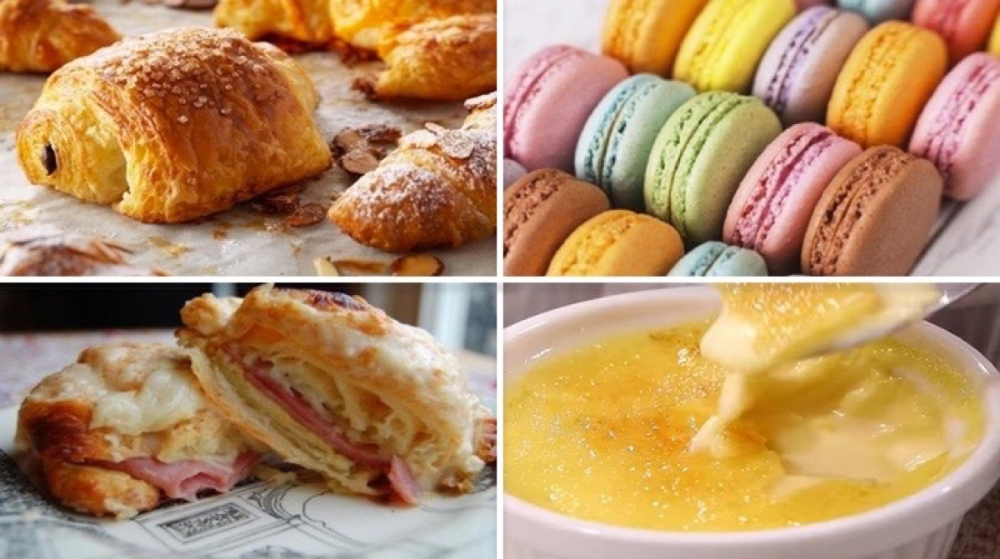

Apodada “La dame de fer” (la dama de hierro) este emblemático monumento ostentó el titulo de la estructura hecha por el hombre más alta del mundo durante 41 años, hasta que el edificio Chrysler fue construido en Nueva York. Durante la ocupación alemana los franceses cortaron los cables del ascensor para que Hitler tuviera que subir por las escaleras, pero no llego a hacerlo y al acercarse las tropas aliadas a París, ordenó que la torre fuera destruida junto con el resto de la ciudad y, como bien sabemos, fue desobedecido. En sus instalaciones funcionan antenas de emisión de F.M y de TV y son necesarias 50 toneladas de pintura cada cinco años para protegerla. Recibe 7 millones de visitantes al año.
El Arco del Triunfo es, junto a la Torre Eiffel, el monumento más representativo de París. Con unas dimensiones de 50 metros de alto y una base de 45 por 22 metros, el Arco del Triunfo representa las victorias del ejército francés bajo las órdenes de Napoleón. La construcción del Arco del Triunfo duró treinta años: Napoleón ordenó su construcción en 1806 al finalizar la batalla de Austerlitz y el Arco se concluyó durante el mandato de Louis-Philippe. El arquitecto fue Jean-François Chalgrin. El Arco del Triunfo ha sido testigo de innumerables momentos históricos entre los que podríamos destacar: el paso de los restos mortales de Napoleón el 15 de diciembre de 1840 y los desfiles militares de las dos guerras mundiales en 1919 y 1944.
También conocido como el "barrio de los pintores", sus pequeñas y empinadas callejuelas constituyen un entramado que incluye desde los más antiguos cabarets hasta los alrededores de la Basílica del Sagrado Corazón, repletos de restaurantes con terrazas y pintores. Montmartre fue una población independiente hasta 1860, cuando pasó a convertirse en el distrito XVIII de París. A finales del siglo XIX el barrio adquirió muy mala fama debido a los cabarets y burdeles que se instalaron en la zona, pero diferentes artistas que lo consideraban un barrio encantador se trasladaron allí para convertirlo en el maravilloso lugar que es en la actualidad.
La gastronomía francesa, y por ende la de París, se caracteriza por contar con platos delicados y refinados, con fantásticos toques de sabor. Si te han contado que los croissants son un “must” que debes probar en francia, es verdad, es una de las cosas que comer en París. Pero no todo son dulces, también hay otros deliciosos platos que puedes probar al visitar París como el Ratatouille o los quesos.
